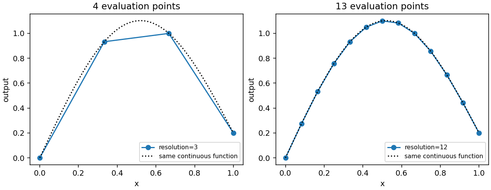

Grid sampling
When a lattice is useful
Use a grid to inspect a fitted curve or surface at predictable locations, include domain boundaries, compare two models at exactly the same points, or prepare a structured experiment whose sample count is known in advance. A barycentric grid includes evenly spaced integer subdivisions of each simplex factor. Product domains take the tensor product of those factor grids.
A grid is particularly helpful when random samples have missed an endpoint or when a sparse display makes a smooth curve appear angular. It can also expose oscillations between observations. It is not evidence of fitting accuracy by itself: evaluating a bad model at more points produces a more detailed picture of that same bad model. Compare against independently measured responses when making an accuracy claim.
The grid API is grid(space, resolution=...) and returns Points. It
uses the compiled geometry and stable cell IDs from the space, so there is no
separate simplex-versus-simploid grid function to choose. It needs only the
core installation; Matplotlib is needed only if you draw the resulting points.
Create and evaluate a grid
import torch
from torch_bsf import BezierSpace, Samples, fit
from torch_bsf.sampling import grid
space = BezierSpace.simplex(1, degree=2)
training = grid(space, resolution=8)
x = training.parameters[:, 1]
samples = Samples(training, x.square()[:, None])
result = fit(space, samples).require_success()
coarse = grid(space, resolution=3)
fine = grid(space, resolution=12)
coarse_values = result.model(coarse)
fine_values = result.model(fine)
assert len(coarse) == 4 and len(fine) == 13
assert coarse_values.shape == (4, 1)
assert fine_values.shape == (13, 1)
Here degree two specifies three learned controls, while resolution twelve specifies thirteen evaluation rows. They are independent settings. Changing the evaluation resolution does not trigger another fit or alter the three controls. If you obtain true outputs at the new grid points and append them as observations, a subsequent fit may change, but that is a separate action.
The row order follows barycentric multi-index enumeration, not necessarily ascending order of the particular coordinate you want on a horizontal axis. Sort by that coordinate before connecting scalar graph points. Keep IDs and values in the same reordered batch. For mixed-cell plots, split by cell first so that lines do not connect unrelated parameter charts.


Fig. 14 Before: resolution three uses four points and straight display segments. After: resolution twelve resolves the same continuous function more finely. The dotted reference is identical in both panels; no model improvement is attributed to the denser display.
The figure is reproduced by python examples/generate_guide_figures.py.
It evaluates a known smooth response to isolate resolution from regression
error. For fitting and degree effects, compare Cross-validation and degree search instead.
Meaning of resolution
For a simplex factor of dimension \(a\), positive resolution \(r\) creates barycentric tuples \((k_0/r,\ldots,k_a/r)\), where all integers \(k_i\) are nonnegative and sum to \(r\). Thus the row count is
A line segment has r+1 rows, a triangle has (r+1)*(r+2)/2, and a
tetrahedron has (r+1)*(r+2)*(r+3)/6. Each includes vertices and all lower
dimensional boundary lattice points. A triangle of resolution ten has 66
rows, not a ten-by-ten rectangular array.
For a product of factors, multiply their counts:
A square represented by dimensions=(1, 1) has (r+1)**2 rows. A prism
of type (2, 1) has ((r+1)*(r+2)/2)*(r+1). At resolution ten, those
counts are 121 and 726 respectively. This growth is why a value convenient
for a curve can be expensive for a high-dimensional product.
Resolution zero is a special, useful case: it returns one barycenter per
selected cell. Every coordinate in a dimension-a factor is 1/(a+1).
It does not return all vertices, and it does not mean an empty grid. Resolution
one gives the factor vertices and their product combinations. Noninteger,
negative and boolean resolutions are invalid.
triangle = BezierSpace.simplex(2, degree=3)
square = BezierSpace.simploid((1, 1), degree=(2, 2))
prism = BezierSpace.simploid((2, 1), degree=(2, 1))
assert len(grid(triangle, 10)) == 66
assert len(grid(square, 10)) == 121
assert len(grid(prism, 10)) == 726
assert torch.allclose(grid(triangle, 0).parameters,
torch.full((1, 3), 1 / 3, dtype=torch.float64))
The current interface uses one resolution for all factors. If the physical
response varies rapidly along one factor but slowly along another, construct
custom Points with an anisotropic lattice yourself, or use random samples.
Do not try to encode anisotropic evaluation density by increasing a factor’s
polynomial degree: degree changes approximation capacity and fitting cost.
Choose cells deliberately
By default, grid visits the space’s maximal cells. Pass cells=[id, ...]
or original builder handles to restrict evaluation to selected patches. For
example, a detailed plot of one problematic patch can use a high resolution
without evaluating the whole assembled domain. A selected lower-dimensional
face receives its own grid and its own cell ID.
Coordinates in a mixed-cell batch are padded to space.width. The active
coordinate width for each row comes from that row’s cell. Never infer a cell
from the padding pattern: two cells can have identical dimensions but distinct
identities. Pass the Points object directly to a multi-cell model so that
prediction order and IDs are retained. Raw untagged parameter tensors are
reserved for single-cell spaces.
Boundary points from different cells are retained as distinct rows, even if the model images coincide on a glued face. This is useful for checking continuity from both charts. It also means a concatenated grid does not define a unique-point quadrature rule or a physical-area weighting. Simply averaging all rows gives more influence to cells with more lattice points and counts shared boundaries repeatedly. Decide the intended integration measure before using such an average as a global objective or metric.
For an assembled space with different cell dimensions, equal resolution can
generate very different counts per cell. A face may contribute relatively few
rows while a high-dimensional patch contributes thousands. Restrict cells
and report per-cell errors when examining coverage. Use sample with
explicit cell probabilities when a fixed total budget and interpretable cell
allocation are more important than exact lattice structure.
How to tune resolution
Start with a low resolution that makes all selected cells visible. Double it and compare the displayed image or error extrema. If the shape and error summary barely change, further display refinement may be unnecessary. If features appear or disappear, increase resolution locally and check whether they are supported by observations. A smooth-looking low-resolution surface can conceal high-degree oscillations.
The cost of model evaluation is affected by both point count and local basis
size. Raising degree and resolution together can multiply work in two ways.
Estimate point counts before allocating a large product grid; use
space.n_controls to understand coefficient count separately. For very
large evaluations, process point subsets with points.take(indices) and
concatenate predictions in original order rather than creating an unnecessarily
large dense display.
For scalar output graphs, use model(points) and ordinary Matplotlib lines
or scatter plots against a selected parameter coordinate. plot_model draws
two or three output coordinates as the model image; it is not a one-output
versus-parameter plotter. The choice changes what the horizontal axis means,
so label it explicitly. See Visualization for overlays and control nets.
A deterministic grid and a fixed seed solve different reproducibility needs. The grid itself has no random seed. Random observation noise, train/test partitioning, and optimization minibatches still need their own recorded seeds if present. Save the chosen resolution and cell list with experiment metadata, so a later evaluation can reproduce exactly the same locations.
Common interpretation errors
A grid point is not necessarily a control point. Control indices depend on
polynomial degree, whereas evaluation locations depend on resolution. Even
when these numbers coincide, an interior Bézier coefficient is generally not
the function value at that lattice coordinate. Use model(points) for
predicted responses, and model.coefficients only when you intend to inspect
the coefficient net.
Densifying predictions does not add information to the observation matrix. If a fit is rank deficient, sampling its output on a finer grid cannot make its original coefficients identifiable. Collect new true observations or change degree or constraints. Likewise, exact agreement of two fitted curves at a few vertices does not imply agreement over the interior; compare them on a sufficiently fine independent evaluation set.
Grids include boundaries that random draws often miss, but they are still a finite set. They do not prove global monotonicity, boundedness, nonintersection or absence of extrema between points. Treat plotted evidence as a diagnostic, and use analytic or certified checks when the application requires those properties. For experiment allocation after an initial grid, see Explicit ensembles and active learning; for domain definitions, see Single and assembled domains.
For a reusable evaluation protocol, keep one fixed grid for reports and a separate observation design for fitting. This prevents changes in display locations from being mistaken for changes in prediction quality.